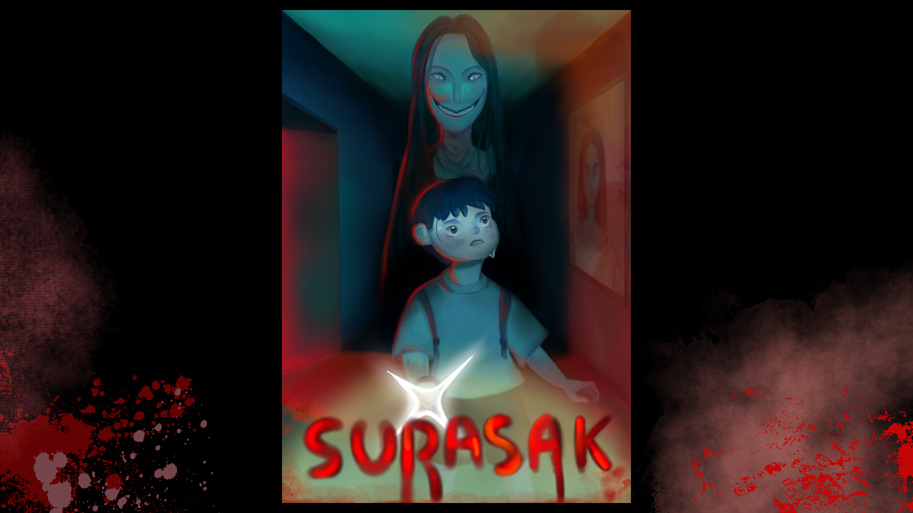
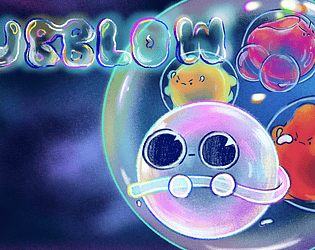

นักศึกษาพัฒนาเกม มหาวิทยาลัยเชียงใหม่ (CAMT) ในบทบาท Game Designer ที่มุ่งเน้นการออกแบบความสนุกอย่างเป็นระบบ มีความเชี่ยวชาญตั้งแต่การวาง Concept, Core Mechanics และ Core Game Loop ไปจนถึงการร่าง Paper Prototype การออกแบบ UX/UI และปรับ Balancing เพื่อสร้างประสบการณ์ที่ดีที่สุดให้แก่ผู้เล่น
ด้วยความเชี่ยวชาญเชิงเทคนิคใน Unity และพื้นฐาน Unreal Engine มีทักษะในการ Bridge ที่ดี สามารถถ่ายทอดวิสัยทัศน์และดีไซน์ของเกมให้ทั้ง ทีม Art และ ฝ่าย Developer เข้าใจภาพรวมและทำงานร่วมกันได้อย่างมีประสิทธิภาพสูงสุด
ออกแบบและปรับสมดุล (Balancing) กฎเกณฑ์ของเกม สร้างความสัมพันธ์ระหว่างตัวแปรต่างๆ เพื่อให้เกิด Core Loop ที่ผู้เล่นอยากกลับมาเล่นซ้ำ
วางผังทางเดิน (Layout) และจังหวะของเกม (Pacing) สร้างผังแบบแปลนเพื่อทดสอบ Flow ของผู้เล่นก่อนนำไปใส่ Art Assets จริง
ผสานเรื่องราวลึกลับเข้ากับเกมเพลย์ สามารถใช้ C# ใน Unity เขียนระบบต้นแบบเพื่อ Find the fun ได้อย่างรวดเร็ว

Role: Game Designer
สร้างประสบการณ์เกม 2D Side-scrolling Pixel Art แนวสยองขวัญ-ไขปริศนา ที่เน้นความกดดันจากการถูกไล่ล่า และมีฉากจบหลายแบบ (Alternative Endings) ผ่านการตัดสินใจ
Role: Game Designer & Technical Artist
ออกแบบระบบ Combat สไตล์ Soul-like ให้ผู้เล่นรู้สึกตึงเครียดและท้าทาย พร้อมการออกแบบ Narrative Flow เพื่อเล่าเรื่องราวเชิงจิตวิทยา
[ รูปภาพ Design Board หรือ Figma ของ Folkfall ]

Role: Game Designer & UI
ออกแบบและสร้างเกม 2D Shooter ที่ต้องแข่งกับเวลา (Global Game Jam) โจทย์คือสร้างเกมเพลย์ที่เรียนรู้ง่ายแต่มีความท้าทายซ่อนอยู่
Role: Game Designer
ออกแบบโครงสร้างเกมเพลย์ Turn-Based Strategy ที่ผู้เล่นต้องคำนวณทิศทาง แรงยิงวิถีโค้ง (Projectile) และใช้สภาพแวดล้อมให้เป็นประโยชน์ พร้อมระบบ AI ที่ตัดสินใจตามสถานการณ์
[ รูปภาพจาก Furry War: แนะนำให้ใช้รูป Flowchart AI Behavior หรือรวม UI Wireframe ]